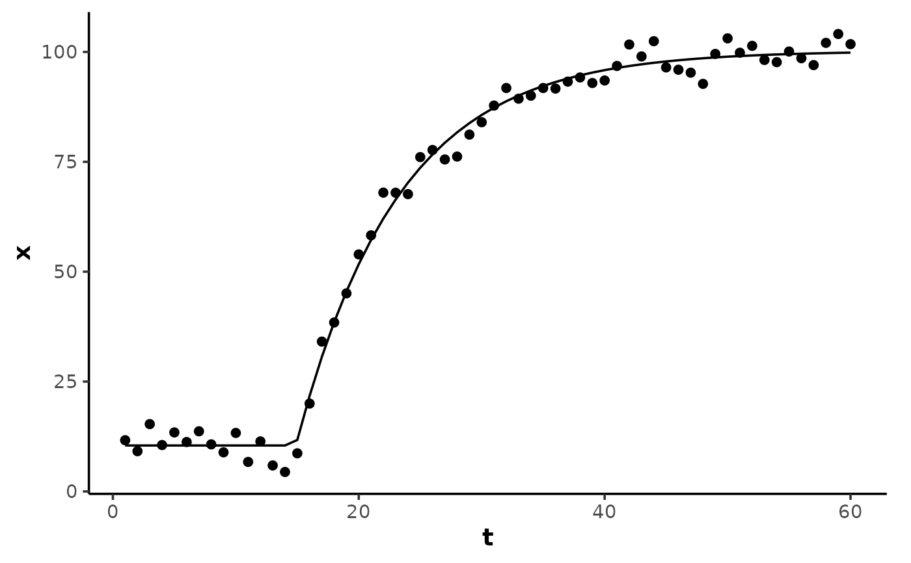

Calculate a four-parameter monoexponential curve.
Arguments
- t
A numeric vector of the predictor variable; time or sample number.
- A
A numeric parameter for the starting (baseline) value of the response variable.
- B
A numeric parameter for the ending (asymptote) value of the response variable.
- tau
A numeric parameter for the time constant
tau(\(\tau\)) of the exponential curve, in units of the predictor variablet.- TD
A numeric parameter for the time delay before the onset of exponential response, in units of the predictor variable
t. IfNULL(default), a 3-parameter model without time delay is used.
Details
3-parameter model equation:
A + (B - A) * (1 - exp(-t / tau))
4-parameter model equation:
ifelse(t <= TD, A, A + (B - A) * (1 - exp(-(t - TD) / tau)))
tau is the time constant and equal to the reciprocal of k, the rate
constant (k = 1/tau).
Examples
set.seed(13)
t <- 1:60
## create an exponential curve with random noise
x <- monoexponential(t, A = 10, B = 100, tau = 8, TD = 15) + rnorm(length(t), 0, 3)
data <- data.frame(t, x)
(model <- nls(x ~ SS_monoexp4(t, A, B, tau, TD), data = data))
#> Nonlinear regression model
#> model: x ~ SS_monoexp4(t, A, B, tau, TD)
#> data: data
#> A B tau TD
#> 10.461 100.233 8.313 14.884
#> residual sum-of-squares: 455.5
#>
#> Number of iterations to convergence: 5
#> Achieved convergence tolerance: 7.481e-07
y <- predict(model, data)
library(ggplot2)
ggplot(data, aes(t, x)) +
theme_mnirs() +
geom_point() +
geom_line(aes(y = y))
